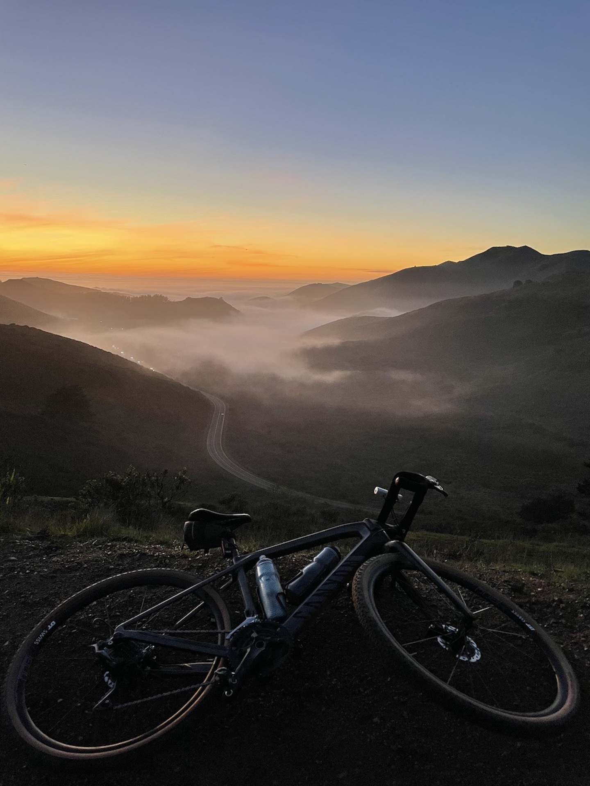

I am a San Francisco native who is on a journey to become a web developer. Before this exciting path, I was a for six years in the intensive care unit. I love being outdoors in nature, my two silly and adventurous , and finding new challenges to conquer. Whether it is overcoming a tough climb on my in the Headlands, learning to code, or figuring out how to design this website, I am always up for that thrill of accomplishing something new!
About Kat


